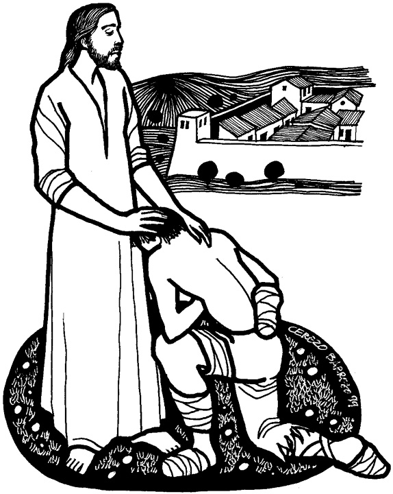

This week's lessons: 2 Kings 5:1-14, Psalm 30, 1 Corinthians 9:24-27, Mark 1:40-45
This
week's lessons: 2
Kings 5:1-14, Psalm
30, 1
Corinthians 9:24-27, Mark
1:40-45
From
MISIONEROS
DEL SAGRADO CORAZÓN EN EL PERÚ http://www.mscperu.org/

From
www.servicioskoinonia.org
Next week's lessons: Isaiah 43:18-25 Psalm 41 2 Corinthians 1:18-22 Mark 2:1-12